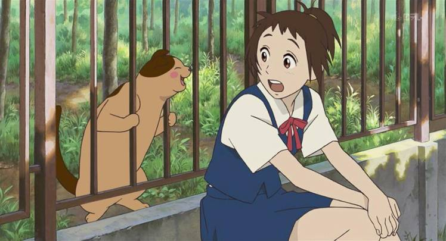
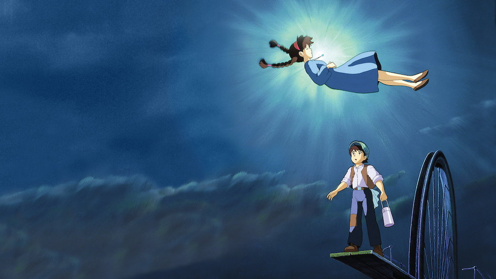
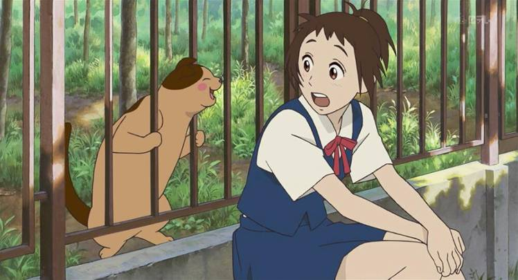
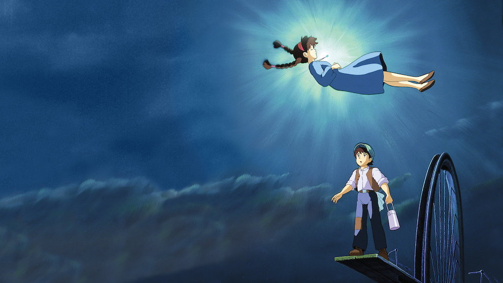
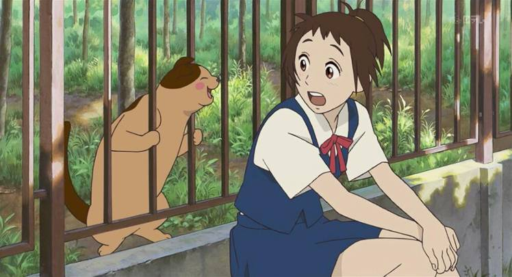
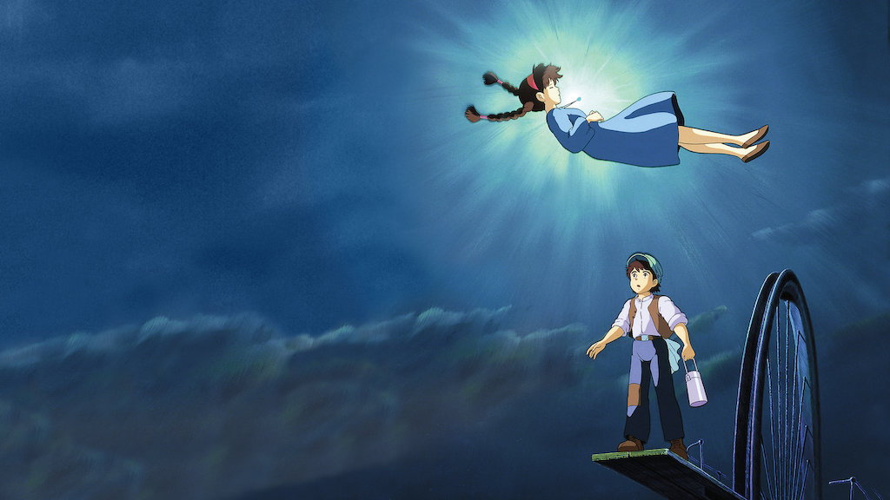

Satsuki and May, who left the city and moved to the countryside, accidentally meet Totoro, a mysterious creature living in the forest, and take a mysterious adventure together. Then one day, the dangerous news arrived at my mother's hospital, and while her sister Satsuki was contacting her father, May went missing...
Learn MoreYou can watch it on Netflix
Learn More

